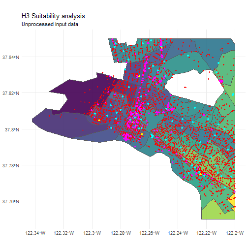
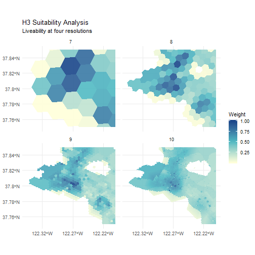

library(httr)
library(jsonlite)
library(geojsonsf)
library(tidyverse)
library(ggspatial)
library(raster)
library(sf)
library(h3jsr)
options(stringsAsFactors = FALSE)New R package: h3jsr
R
H3
JavaScript
DGGS
Probably should have learned more JavaScript instead >.>
Lauren O’Brien ![]()
Background
Discrete Global Grids! They’re pretty cool, and slowly starting to catch on. Google’s been plugging away at S2 for a while now, and Uber recently released H3. Both libraries are open-sourced and have their own sets of interesting features, but don’t seem to have found their way into traditional GIS software yet, so you need some coding skill to access them.
I could see some interesting potential use cases for H3 as soon as I read the documentation, so I was super keen to start playing with it ASAP. There were some barriers between me and all the hexagons I could eat though, so I had to do a little work first.
My process here was basically:
- realise that no R bindings were available for
H3(apart from this attempt, which appears to be slightly abandoned and doesn’t work in Windows), sulk a little - realise there’s a transpiled version,
h3-js, and that V8 is a thing (hot damn!) - spend a Saturday morning figuring out how to get
h3-jsbundled into a v8 session - realise I now have to learn some damn JavaScript; spend Saturday afternoon on codecademy
- briefly ponder whether six (6) hours of JS experience is enough to get by
- proceed anyway because I’ve got this far and f*&k imposter syndrome, right? Right.
- …?
- profit!
h3jsr is now available from GitHub. I’m feeling pretty good about it.
Y tho
Right now my own applications for this package are nice data aggregation and pretty maps. That might seem basic, but that does seem to be all that Uber are using it for themselves so far, and its solved some substantial business problems.
Performance
You’ll be able to do a fair bit with this package so long as you think ahead. The most important thing to remember is that every call to a h3jsr function involves casting data into a JS environment via JSON, and that eats time. Aim to feed as much data into one function call as possible - use lists, vectors or dataframes as input wherever you can, don’t try and iterate over individual geometries. Bear in mind that there’s an upper limit to what V8 can transfer in one hit.
Demo time
I did the bulk of the work on this package back in July, and then idly tinkered with it while failing to complete this post - my examples were boring! Luckily the Uber Open Summit 2018 happened not long ago and as part of it, h3-js dev Nick Rabinowitz ran a great live tutorial on Suitability Analysis using h3-js and Mapbox GL JS. Attempting a rebuild in R seems like a good way to demonstrate key functions.
All the tutorial inputs are github gists, so I can download and convert them to sf data frames like so:
Oakland crime reports, last 90 days. Source: data.oaklandnet.com:
crime_90_days <- httr::GET('https://gist.githubusercontent.com/nrabinowitz/d3a5ca3e3e40727595dd137b65058c76/raw/f5ef0fed8972d04a27727ebb50e065265e2d853f/oakland_crime_90days.json') %>%
httr::content() %>%
fromJSON() %>%
sf::st_as_sf(., coords = c('lng', 'lat'), crs = 4326) # JSON's always 4326
head(crime_90_days)## Simple feature collection with 6 features and 1 field
## geometry type: POINT
## dimension: XY
## bbox: xmin: -122.2758 ymin: 37.75606 xmax: -122.1889 ymax: 37.81339
## epsg (SRID): 4326
## proj4string: +proj=longlat +datum=WGS84 +no_defs
## type geometry
## 1 VANDALISM POINT (-122.2655 37.81339)
## 2 ASSAULT POINT (-122.2758 37.7969)
## 3 THEFT/LARCENY POINT (-122.2026 37.75606)
## 4 ROBBERY POINT (-122.2352 37.78423)
## 5 DISTURBING THE PEACE POINT (-122.1889 37.79133)
## 6 VANDALISM POINT (-122.219 37.78628)Oakland public school locations. Source: data.oaklandnet.com
public_schools <- httr::GET('https://gist.githubusercontent.com/nrabinowitz/d3a5ca3e3e40727595dd137b65058c76/raw/babf7357f15c99a1b2a507a33d332a4a87b7df8d/public_schools.json') %>%
httr::content() %>%
fromJSON() %>%
sf::st_as_sf(., coords = c('lng', 'lat'), crs = 4326)
head(public_schools)## Simple feature collection with 6 features and 1 field
## geometry type: POINT
## dimension: XY
## bbox: xmin: -122.2869 ymin: 37.74664 xmax: -122.1656 ymax: 37.813
## epsg (SRID): 4326
## proj4string: +proj=longlat +datum=WGS84 +no_defs
## type geometry
## 1 Charter POINT (-122.1849 37.79886)
## 2 Charter POINT (-122.225 37.77617)
## 3 Middle POINT (-122.1656 37.74664)
## 4 High POINT (-122.2869 37.813)
## 5 Elementary POINT (-122.23 37.77982)
## 6 Elementary POINT (-122.2371 37.80036)BART station locations. Source: bart.gov. This is GeoJSON data, not straight JSON, so note how the import proccess is a little different.
bart_stations <- httr::GET('https://gist.githubusercontent.com/nrabinowitz/d3a5ca3e3e40727595dd137b65058c76/raw/8f1a3e30113472404feebc288e83688a6d5cf33d/bart.json') %>%
httr::content() %>%
geojson_sf()
head(bart_stations[, 1])## Simple feature collection with 6 features and 1 field
## geometry type: POINT
## dimension: XYZ
## bbox: xmin: -122.4475 ymin: 37.72158 xmax: -122.2686 ymax: 37.8528
## epsg (SRID): 4326
## proj4string: +proj=longlat +datum=WGS84 +no_defs
## name geometry
## 1 12th St. Oakland City Center (12TH) POINT Z (-122.2715 37.80377 0)
## 2 16th St. Mission (16TH) POINT Z (-122.4197 37.76506 0)
## 3 19th St. Oakland (19TH) POINT Z (-122.2686 37.80835 0)
## 4 24th St. Mission (24TH) POINT Z (-122.4181 37.75247 0)
## 5 Ashby (ASHB) POINT Z (-122.2701 37.8528 0)
## 6 Balboa Park (BALB) POINT Z (-122.4475 37.72158 0)Travel times from Oakland to downtown SF by census tract. Source: movement.uber.com
sf_travel_times <- httr::GET('https://gist.githubusercontent.com/nrabinowitz/d3a5ca3e3e40727595dd137b65058c76/raw/657a9f3b64fedc718c3882cd4adc645ac0b4cfc5/oakland_travel_times.json') %>%
httr::content() %>%
geojson_sf()
head(sf_travel_times)## Simple feature collection with 6 features and 3 fields
## geometry type: MULTIPOLYGON
## dimension: XY
## bbox: xmin: -122.3049 ymin: 37.74276 xmax: -122.1595 ymax: 37.84773
## epsg (SRID): 4326
## proj4string: +proj=longlat +datum=WGS84 +no_defs
## MOVEMENT_ID DISPLAY_NAME travelTime
## 1 46 500 Chester Street, West Oakland, Oakland 708
## 2 47 9700 Birch Street, Cox, Oakland 1575
## 3 58 5600 Genoa Street, Santa Fe, Oakland 1015
## 4 98 500 10th Street, Downtown Oakland, Oakland 826
## 5 99 2400 19th Avenue, Highland Terrace, Oakland 1166
## 6 151 500 20th Street, Downtown Oakland, Oakland 908
## geometry
## 1 MULTIPOLYGON (((-122.304 37...
## 2 MULTIPOLYGON (((-122.1725 3...
## 3 MULTIPOLYGON (((-122.2779 3...
## 4 MULTIPOLYGON (((-122.2796 3...
## 5 MULTIPOLYGON (((-122.238 37...
## 6 MULTIPOLYGON (((-122.276 37...Oakland points of interest. Source: uber.com/local
pois <- httr::GET('https://gist.githubusercontent.com/nrabinowitz/d3a5ca3e3e40727595dd137b65058c76/raw/ded89c2acef426fe3ee59b05096ed1baecf02090/oakland-poi.json') %>%
httr::content() %>%
fromJSON() %>%
sf::st_as_sf(., coords = c('lng', 'lat'), crs = 4326) %>%
dplyr::filter(type %in% c('Cafes', 'Places to eat', 'Restaurant'))
head(pois)## Simple feature collection with 6 features and 1 field
## geometry type: POINT
## dimension: XY
## bbox: xmin: -122.2763 ymin: 37.77091 xmax: -122.211 ymax: 37.83476
## epsg (SRID): 4326
## proj4string: +proj=longlat +datum=WGS84 +no_defs
## type geometry
## 1 Restaurant POINT (-122.2567 37.8281)
## 2 Restaurant POINT (-122.2632 37.83476)
## 3 Restaurant POINT (-122.2705 37.80706)
## 4 Restaurant POINT (-122.211 37.77091)
## 5 Restaurant POINT (-122.2763 37.79486)
## 6 Restaurant POINT (-122.2437 37.81062)That’s a lot of messy data:
cropper <- st_bbox(c('xmin' = -122.35, 'ymin' = 37.75,
'xmax' = -122.20, 'ymax' = 37.85), crs = st_crs(4326))
plot_these <- lapply(list(sf_travel_times, crime_90_days, public_schools,
bart_stations, pois), function(x) {
sf::st_crop(x, cropper)
})
ggplot() +
layer_spatial(plot_these[[1]], aes(fill = travelTime), alpha = 0.9,
show.legend = FALSE) +
scale_fill_viridis_c() +
layer_spatial(plot_these[[2]], col = 'red', pch = 20) +
layer_spatial(plot_these[[3]], col = 'cyan', pch = 19) +
layer_spatial(plot_these[[4]], col = 'yellow', pch = 18, size = 2) +
layer_spatial(plot_these[[5]], col = 'magenta', pch = 17) +
theme_minimal() +
ggtitle('H3 Suitability analysis', subtitle = 'Unprocessed input data')
Time to make some sense of it.
We’ll take each of the raw data layers we’re bringing in and convert them to hexagon layers. Each layer will be a map of H3 index to some value normalized between zero and 1 with this helper function:
normalise_layer <- function(layer = NULL, b0 = FALSE) {
dplyr::filter(layer, !is.na(h3)) %>%
dplyr::group_by(h3) %>%
dplyr::summarise('weight' = sum(weight, na.rm = TRUE)) %>%
dplyr::mutate(norm = if (b0) {
scales::rescale(weight, to = c(0, 1), from = c(0, max(weight, na.rm = TRUE)))
} else { scales::rescale(weight, to = c(0, 1)) }) # from = range(x)
}Analysis is being conducted at four of H3’s 15 resolution levels - 7-10 - so each data layer must be binned and normalised four times. This is where purrr can be handy.
For crime, the output layer is just a normalised count of incidents per hex.
crime_hexes <- point_to_h3(crime_90_days, seq(7, 10)) %>%
purrr::map(., function(h3) {
dat <- data.frame('h3' = h3, 'weight' = 1L,
stringsAsFactors = FALSE) %>%
normalise_layer()
})
head(crime_hexes[['h3_resolution_7']])## # A tibble: 6 x 3
## h3 weight norm
## <chr> <int> <dbl>
## 1 872830802ffffff 5 0.000486
## 2 872830810ffffff 2060 1
## 3 872830811ffffff 311 0.149
## 4 872830812ffffff 575 0.278
## 5 872830813ffffff 535 0.258
## 6 872830814ffffff 145 0.0686For schools, there’s a bit of buffering added so that addresses adjacent to those containing a school are given some weight.
school_hexes <- point_to_h3(public_schools, seq(7, 10)) %>%
purrr::map(., function(h3) {
# returns 7 addresses - input and neighbours
near_school <- get_kring(h3, 1)
near_wts <- c(1, rep(0.5, 6)) # surrounds are worth half
# combine and normalise
dat <- purrr::map_dfr(near_school, function(h3) {
data.frame('h3' = h3, 'weight' = near_wts, stringsAsFactors = FALSE)
}) %>%
normalise_layer()
})
head(school_hexes[[1]])## # A tibble: 6 x 3
## h3 weight norm
## <chr> <dbl> <dbl>
## 1 872830802ffffff 2.5 0.0556
## 2 872830806ffffff 1 0.0139
## 3 872830810ffffff 25.5 0.694
## 4 872830811ffffff 14.5 0.389
## 5 872830812ffffff 23.5 0.639
## 6 872830813ffffff 22.5 0.611For BART stations, the buffering is more sophisticated, with a smooth decay function implemented. This does a better job of preserving the area of influence around a station across different H3 resolutions.
km_to_radius <- function(km, res) {
floor(km / res_length(res, units = 'km'))
}
bart_hexes <- point_to_h3(bart_stations, seq(7, 10)) %>%
purrr::map2(., seq(7,10), function(h3, res) {
d <- km_to_radius(1, res)
near_bart <- get_kring_list(sort(unique(h3)), d)
# weights are the same for every feature so just make a template
near_wts <- purrr::map(near_bart[1], function(feature) {
purrr::map2(feature, seq_along(feature), function(ring, step) {
wt <- 1 - step * 1 / (d + 1)
rep(wt, length(ring))
})
}) %>% unlist()
purrr::map(near_bart, unlist) %>%
purrr::map_dfr(., function(x) {
data.frame('h3' = x, 'weight' = near_wts, stringsAsFactors = FALSE)
}) %>%
normalise_layer()
})
head(bart_hexes[[1]])## # A tibble: 6 x 3
## h3 weight norm
## <chr> <dbl> <dbl>
## 1 872830810ffffff 0 0.5
## 2 872830813ffffff 0 0.5
## 3 872830815ffffff 0 0.5
## 4 872830828ffffff 0 0.5
## 5 87283082affffff 0 0.5
## 6 87283082cffffff 0 0.5For travel time, we find all of the intersecting H3 addresses for each polygon in sf_travel_times before assigning them weights based on the travelTime attribute. The center of a given address must intersect the polygon before it can be returned. Weights are negative as lower travel times are better.
travel_hexes <- purrr::map(seq(7, 10), function(res) {
dat <- polyfill(sf_travel_times, res, simple = FALSE)
dat <- purrr::map2_dfr(as.list(dat$travelTime),
dat$h3_polyfillers,
function(x, y) {
data.frame('h3' = y, 'weight' = 1/x)
}) %>%
normalise_layer(., TRUE)
})
head(travel_hexes[[1]])## # A tibble: 6 x 3
## h3 weight norm
## <chr> <dbl> <dbl>
## 1 872830802ffffff 0.00151 0.802
## 2 872830810ffffff 0.00110 0.586
## 3 872830811ffffff 0.00188 1
## 4 872830812ffffff 0.00127 0.673
## 5 872830813ffffff 0.00137 0.727
## 6 872830815ffffff 0.00129 0.686Lastly, points of interest are tallied, just as crime was.
food_hexes <- point_to_h3(pois, seq(7, 10)) %>%
purrr::map(., function(h3) {
dat <- data.frame('h3' = h3, 'weight' = 1L,
stringsAsFactors = FALSE) %>%
normalise_layer()
})
head(food_hexes[[1]])## # A tibble: 6 x 3
## h3 weight norm
## <chr> <int> <dbl>
## 1 872830810ffffff 851 1
## 2 872830811ffffff 16 0.0176
## 3 872830812ffffff 407 0.478
## 4 872830813ffffff 331 0.388
## 5 872830814ffffff 173 0.202
## 6 872830816ffffff 98 0.114Phew! Now we can plug the data together to get some overall weights. For each resolution, the following code adds up the normalised weights all of the ‘good’ layers, and then subtracts crime.
# arrange data by resolution instead of theme
datnm <- c('crime', 'school', 'bart', 'travel', 'food')
dat <- list(crime_hexes, school_hexes, bart_hexes,
travel_hexes, food_hexes) %>%
purrr::transpose() %>%
purrr::map(., setNames, datnm)
final_surfaces <- purrr::map(dat, function(res) {
# rename cols for nicer joins
purrr::map2(res, datnm, function(x,y) {
dplyr::rename_at(x, vars(norm), funs(paste0('n_', y))) %>%
dplyr::select(-weight)
}) %>%
# condense inputs
purrr::reduce(., full_join, by = 'h3') %>%
replace(is.na(.), 0) %>%
rowwise() %>%
dplyr::mutate(weight =
sum(c(n_school, n_bart, n_travel, n_food)) - n_crime) %>%
ungroup() %>%
dplyr::select(h3, weight) %>%
normalise_layer() %>%
h3_to_polygon(., simple = FALSE)
})
head(final_surfaces[[2]])## Simple feature collection with 6 features and 4 fields
## geometry type: POLYGON
## dimension: XY
## bbox: xmin: -122.3869 ymin: 37.79247 xmax: -122.3053 ymax: 37.8162
## epsg (SRID): 4326
## proj4string: +proj=longlat +datum=WGS84 +no_defs
## weight norm h3_address h3_resolution
## 1 0.0000000 0.02495816 882830801bfffff 8
## 2 0.8024133 0.45593409 8828308021fffff 8
## 3 0.8024133 0.45593409 8828308023fffff 8
## 4 0.8024133 0.45593409 8828308025fffff 8
## 5 1.0000000 0.56205787 8828308027fffff 8
## 6 0.8024133 0.45593409 882830802bfffff 8
## geometry
## 1 POLYGON ((-122.3796 37.7924...
## 2 POLYGON ((-122.3202 37.7985...
## 3 POLYGON ((-122.3276 37.8044...
## 4 POLYGON ((-122.3098 37.8009...
## 5 POLYGON ((-122.3172 37.8068...
## 6 POLYGON ((-122.3306 37.7961...All that and I still can’t give you a cool interactive map like the source Observable notebook, but my plot below matches up nicely. Winner!
cropper <- st_bbox(c('xmin' = -122.35, 'ymin' = 37.75,
'xmax' = -122.20, 'ymax' = 37.85), crs = st_crs(4326))
plot_that <- st_crop(do.call(rbind, final_surfaces), cropper)
ggplot() +
layer_spatial(plot_that, aes(fill = norm), alpha = 0.9, col = NA) +
facet_wrap(. ~ h3_resolution) +
scale_fill_gradientn(colors = c('#ffffD9', '#50BAC3', '#1A468A')) +
scale_x_continuous(breaks = c(-122.32, -122.27, -122.22)) +
ggtitle('H3 Suitability Analysis',
subtitle = 'Liveability at four resolutions') +
labs(fill = 'Weight') +
theme_minimal()
Its nice to confirm that h3jsr does what it oughta, but my major take-home from this is that I really need to learn me some geospatial JS. The code is much more concise than the R equivalent. In fact, the above was worse before I took the time to revamp a couple of my wrapper functions. The JS is also very fast, and the interactive maps are a real winner. I know I could probably do something here with mapview or better yet, mapdeck and Shiny, but that would be even more code (not to mention getting it to work properly on my current blog setup, which I’m not sure is possible…). So I’m very impressed.
Anyway, there it is, feel free to experiment with the package, and I welcome PRs that will speed it up or improve useability. Its been a worthwhile learning exercise, and I’m using h3jsr fairly often at work. I’m pretty sure that an Rcpp-powered version of this that hooks into original-flavour H3 will be much, much faster, though, so I don’t think this package will go to CRAN.
Citation
BibTeX citation:
@unpublished{o'brien2018,
author = {Lauren O’Brien},
title = {New {R} Package: H3jsr},
date = {2018-12-21},
url = {https://obrl-soil.github.io/posts/2018-12-21_h3jsr-announcement},
langid = {en}
}
For attribution, please cite this work as:
Lauren O’Brien. 2018. “New R Package: H3jsr.” https://obrl-soil.github.io/posts/2018-12-21_h3jsr-announcement.